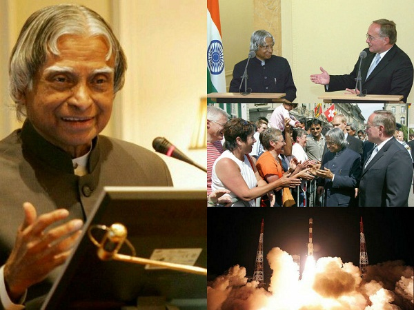

Avul Pakir Jainulabdeen Abdul Kalam was born on 15 October 1931 to a Tamil Muslim family in the pilgrimage centre of Rameswaram on Pamban Island, then in the Madras Presidency and now in the State of Tamil Nadu. His father Jainulabdeen was a boat owner and imam of a local mosque;his mother Ashiamma was a housewife. His father owned a ferry that took Hindu pilgrims back and forth between Rameswaram and the now uninhabited Dhanushkodi.Kalam was the youngest of four brothers and one sister in his family.His ancestors had been wealthy traders and landowners, with numerous properties and large tracts of land. Their business had involved trading groceries between the mainland and the island and to and from Sri Lanka, as well as ferrying pilgrims between the mainland and Pamban. As a result, the family acquired the title of "Mara Kalam Iyakkivar" (wooden boat steerers), which over the years became shortened to "Marakier." With the opening of the Pamban Bridge to the mainland in 1914, however, the businesses failed and the family fortune and properties were lost over time, apart from the ancestral home.By his early childhood, Kalam's family had become poor; at an early age, he sold newspapers to supplement his family's income.
In his school years, Kalam had average grades but was described as a bright and hardworking student who had a strong desire to learn. He spent hours on his studies, especially mathematics.After completing his education at the Schwartz Higher Secondary School, Ramanathapuram, Kalam went on to attend Saint Joseph's College, Tiruchirappalli, then affiliated with the University of Madras, from where he graduated in physics in 1954.He moved to Madras in 1955 to study aerospace engineering in Madras Institute of Technology.While Kalam was working on a senior class project, the Dean was dissatisfied with his lack of progress and threatened to revoke his scholarship unless the project was finished within the next three days. Kalam met the deadline, impressing the Dean, who later said to him, "I was putting you under stress and asking you to meet a difficult deadline".He narrowly missed achieving his dream of becoming a fighter pilot, as he placed ninth in qualifiers, and only eight positions were available in the IAF.
Back to top